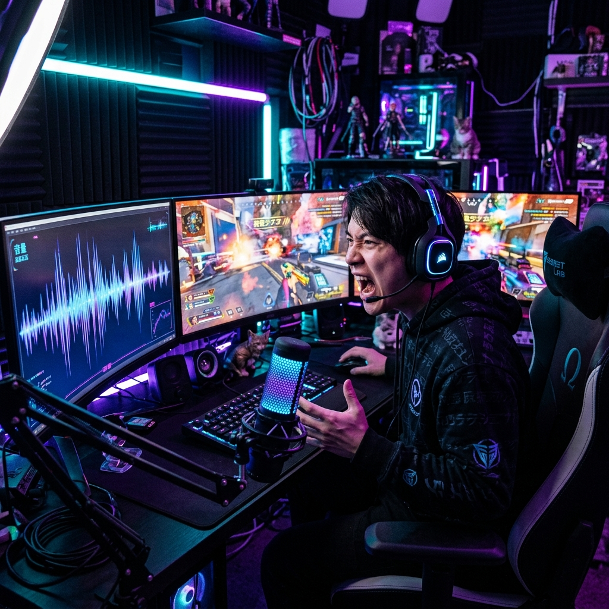

AI VIDEO / CONTENT
1時間の動画を、
1時間の動画を、
「15秒のバイラル動画」へ錬成する。
POD-SHORTSは、YouTubeやポッドキャストの長尺動画から、最も「バズる」瞬間をAIが自動で切り抜き、テロップとエフェクトを付けてショート動画を量産する次世代エディターです。

THE EDITING BURDEN
ショート動画を作る圧倒的な手間
1時間の動画を全部見直して面白い部分を探し、縦型にトリミングし、テロップを手作業で付ける。この絶望的な作業量がクリエイターを疲弊させています。
VIRAL ENGINE
「バズの法則」を学習したAI
ハイライト自動抽出
音声のトーンや笑い声、キーワードから、視聴維持率が高くなる「最高の瞬間」をAIが見つけ出します。
顔追従オートフレーミング
横長動画から人物の顔を自動で追いかけ、縦型（9:16）のフレームに常に収まるよう自動調整します。
高精度ダイナミックテロップ
話者の言葉を瞬時に文字起こしし、TikTok風のポップで視認性の高いテロップを自動で付与します。
AUTO PUBLISHING
SNSへの全自動スケジュール投稿
生成された数十本のショート動画を、最適な時間帯に各SNSへ自動で投稿予約。運用を完全に手放せます。
BRAND KITS
ブランドに合わせたカスタマイズ
自社のブランドカラーやロゴ、独自のフォントをあらかじめ設定し、一貫した世界観を保ちます。
CLIENT SUCCESS
Case Study | ビジネス系YouTuber
過去の対談動画をPOD-SHORTSに読み込ませただけで月に100本のショート動画が完成。チャンネル登録者数が1ヶ月で5万人増加しました。
OUR VISION
すべての言葉を、チャンスに変える
価値ある情報が「長すぎる」という理由で埋もれるのを防ぎ、最も伝わりやすい形に変換して世界へ拡散します。